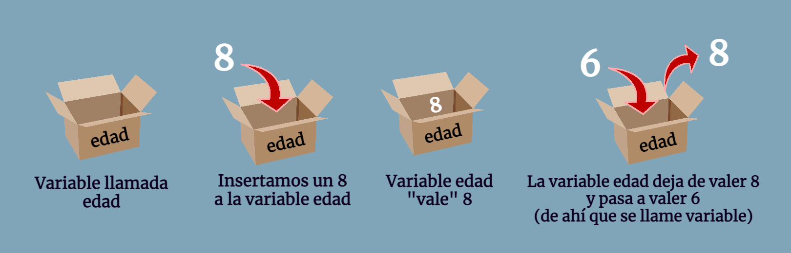

2. El Algoritmo: El motor del pensamiento lógico¶
Antes de tocar un teclado o abrir un programa, un programador debe resolver el problema en su mente. Esa solución es el algoritmo. Como vimos brevemente, un algoritmo no es exclusivo de la informática; es una herramienta que usamos a diario.
2.1. Definición y propiedades¶
Definición de Algoritmo
Un algoritmo se define como un conjunto de pasos lógicos, sucesivos y bien definidos que permiten resolver un problema o realizar una tarea.
Para que un algoritmo sea considerado como tal en el ámbito técnico, debe cumplir con tres reglas de oro:
- Precisión: Cada paso debe estar perfectamente indicado. No puede haber ambigüedad (por ejemplo, en lugar de decir "echa un poco de sal", un algoritmo diría "añadir 5 gramos de sal").
- Definición: Si se sigue el algoritmo varias veces partiendo de los mismos datos, el resultado debe ser siempre el mismo.
- Finitud: Todo algoritmo debe tener un número determinado de pasos. Debe empezar y, obligatoriamente, terminar.
2.2. Anatomía de un algoritmo¶
Casi cualquier algoritmo se divide en tres partes fundamentales:
- Entrada (Input): La información que necesitamos para empezar (los ingredientes, los números a sumar, los datos del usuario).
- Proceso: El conjunto de operaciones, cálculos y decisiones que transforman la entrada.
- Salida (Output): El resultado final obtenido (el plato cocinado, el resultado de la suma, el mensaje en pantalla).
graph LR
%% Definición de estilos
classDef input fill:#e1f5fe,stroke:#01579b,stroke-width:2px;
classDef process fill:#fff3e0,stroke:#e65100,stroke-width:2px;
classDef output fill:#e8f5e9,stroke:#1b5e20,stroke-width:2px;
%% Nodos del diagrama
A["<b>Entrada (Input)</b><br/>Información necesaria<br/><i>(Ingredientes, datos, números)</i>"]
B["<b>Proceso</b><br/>Operaciones y cálculos<br/><i>(Cocinar, sumar, decidir)</i>"]
C["<b>Salida (Output)</b><br/>Resultado final<br/><i>(Plato listo, suma total, mensaje)</i>"]
%% Conexiones
A --> B
B --> C
%% Aplicación de estilos
class A input;
class B process;
class C output;2.3. Algoritmos cotidianos (Ejemplos detallados)¶
Analicemos algunos de los ejemplos que aparecen en la vida real para entender su estructura:
A. Planchar una camisa (Proceso Secuencial)¶
Este es un algoritmo puramente lineal:
graph TD
%% Estilos de los bloques
classDef inicio_fin fill:#f9f,stroke:#333,stroke-width:2px;
classDef paso fill:#ff66,stroke:#333,stroke-width:1px;
Start("<b>Inicio</b>") --> A[1. Abrir la tabla de planchar]
A --> B[2. Rellenar la plancha de agua y encenderla]
B --> C[3. Colocar la camisa desabotonada sobre la tabla]
C --> D[4. Planchar hombros y espalda superior]
D --> E["5. Planchar de derecha a izquierda <br/><i>(sin tocar las mangas)</i>"]
E --> F[6. Planchar los brazos de la camisa]
F --> G[7. Sacar una percha y colgar la camisa]
G --> H[8. Guardar en el armario y cerrar]
H --> End("<b>Fin</b>")
%% Aplicar estilos
class Start,End inicio_fin;
class A,B,C,D,E,F,G,H paso;B. El algoritmo de la pesca¶
graph TD
%% Estilos
classDef inicio_fin fill:#f9f,stroke:#333,stroke-width:2px;
classDef proceso fill:#ff66,stroke:#333,stroke-width:1px;
Start([<b>Inicio</b>]) --> A[1. Poner cebo al anzuelo]
A --> B[2. Tirar el sedal al agua]
B --> C[3. Esperar a que pique]
C --> D[4. El pez se traga el anzuelo]
D --> E[5. Enrollar el sedal y sacar el pescado]
E --> F[6. Quitar el anzuelo de la boca]
F --> G[7. Llevar el pescado a casa]
G --> End([<b>Fin</b>])
%% Aplicación de estilos
class Start,End inicio_fin;
class A,B,C,D,E,F,G proceso;2.4. De la realidad al ordenador: El concepto de variable¶
Cuando pasamos de "planchar una camisa" a "sumar números", necesitamos un concepto clave: la Variable.
Imagina que una variable es una caja con un nombre escrita en el exterior. Dentro de esa caja podemos guardar un dato (un número, una palabra).

- Si quiero sumar dos números, necesito tres cajas:
num1,num2yresultado. - El algoritmo de una suma sería:
graph TD
%% Estilos de los bloques
classDef inicio_fin fill:#f9f,stroke:#333,stroke-width:2px;
classDef entrada_salida fill:#e1f5fe,stroke:#01579b,stroke-width:2px;
classDef proceso fill:#fff,stroke:#333,stroke-width:1px;
Start([<b>Inicio</b>]) --> A[/Pedir valor para variable num1/]
A --> B[/Pedir valor para variable num2/]
B --> C[resultado = num1 + num2]
C --> D[/Mostrar contenido de variable resultado/]
D --> End([<b>Fin</b>])
%% Aplicación de estilos
class Start,End inicio_fin;
class A,B,D entrada_salida;
class C proceso;2.5. Errores comunes en el Diseño¶
- Bucles infinitos: Diseñar un algoritmo que nunca termina (ej: "Camina hacia adelante" sin decir cuándo parar).
- Pasos omitidos: Dar por hecho que la máquina sabe algo (ej: decirle al ordenador "Calcula el área" sin decirle antes cuánto miden los lados).
- Ambigüedad: Instrucciones que pueden interpretarse de varias formas (ej: "Añade un poco de agua" sin especificar cuánto es "un poco").